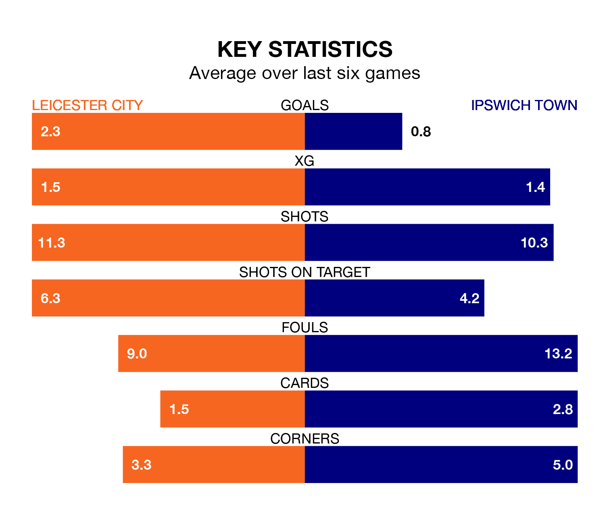

Leicester City host Ipswich Town in Monday's late match at the King Power Stadium looking to bounce back from defeat last time out in EFL Championship.
The Foxes, who sit top of the league after 27 games, fell to a 3-1 away defeat to Coventry City on January 13.
They face an Ipswich side who picked up a win in their last match, a 2-1 victory against Sunderland, and who sit second in the table.
With 55 goals in 27 games so far this season, Leicester are the league's highest scorers with 2.0 goals per game. And they are conceding fewer than average, letting in 21 goals at a rate of 0.8 per game.
Ipswich are also above average scorers, with 1.9 goals per game, compared to a league average of 1.4. They have conceded 1.3 goals per game.
With Mads Hermansen between the sticks, City can rely on one of the league's safest pair of hands. He has kept nine clean sheets in his 26 appearances this season, and only one other 'keeper – West Bromwich Albion's Alex Palmer – has been able to prevent the opposition scoring on more occasions in EFL Championship.
In Town's net, Václav Hladký also has nine clean sheets in 27 games. He has conceded a goal every 81 minutes, 70% more often than the 138 minutes between goals for Hermansen.
The Foxes are in good form in EFL Championship, with four wins and a draw from their last six games.
With a win and four draws over that period, the Blues' form is much worse – they have taken seven points from 18, compared to the hosts' 13.
Updated: 14:53 (UTC), 16/01/24